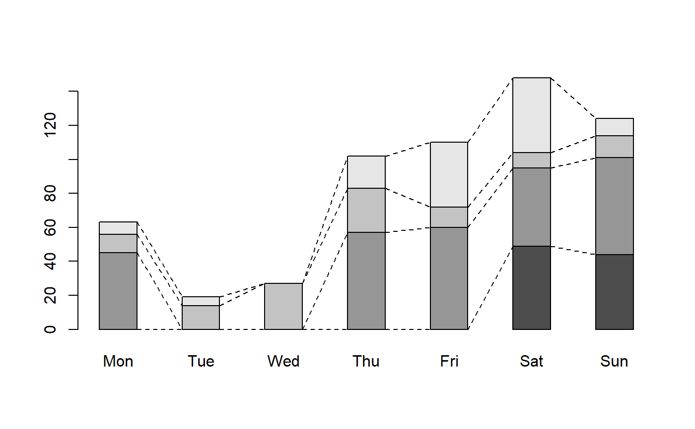
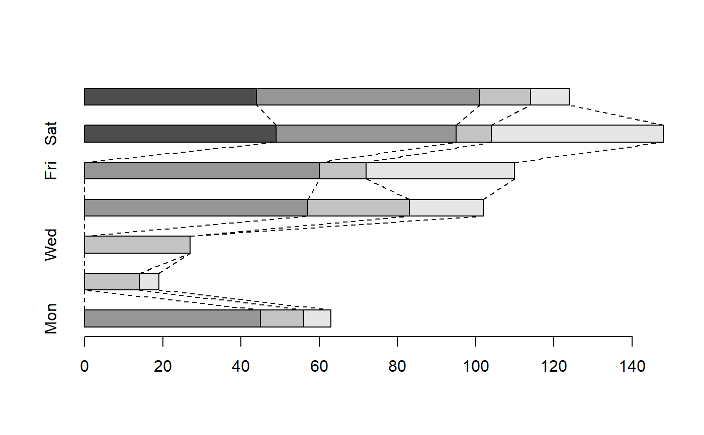
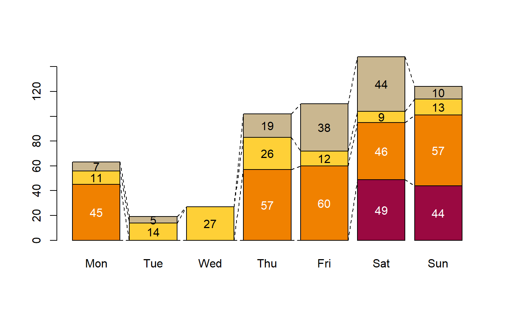

ConnLines.RdAdd connection lines to a stacked barplot (beside = TRUE is not supported). The function expects exactly the same arguments, that were
used to create the barplot.
ConnLines(..., col = 1, lwd = 1, lty = "solid", xalign = c("mar","mid"))
| ... | the arguments used to create the barplot. (The dots are sent directly to barplot). |
|---|---|
| col | the line color of the connection lines. Defaults to black. |
| lwd | the line width for the connection lines. Default is 1. |
| lty | the line type for the connection lines. Line types can either be specified as an integer
(0=blank, 1=solid (default), 2=dashed, 3=dotted, 4=dotdash, 5=longdash, 6=twodash) or as one of the
character strings |
| xalign | defines where the lines should be aligned to on the x-axis. Can be set either to the margins of the bars ("mar" which is the default) or to "mid". The latter will lead the connecting lines to the middle of the bars. |
tab <- with( subset(d.pizza, driver %in% c("Carpenter","Miller","Farmer","Butcher")), table(factor(driver), Weekday(date, "dd", stringsAsFactor=TRUE)) ) tab#> #> Mon Tue Wed Thu Fri Sat Sun #> Butcher 0 0 0 0 0 49 44 #> Carpenter 45 0 0 57 60 46 57 #> Farmer 11 14 27 26 12 9 13 #> Miller 7 5 0 19 38 44 10ConnLines(tab, beside=FALSE, space=1.2, lcol="grey50", lwd=1, lty=2)ConnLines(tab, beside=FALSE, space=1.2, horiz=TRUE, lcol="grey50", lwd=1, lty=2)ConnLines(tab, beside=FALSE, horiz=FALSE, lcol="grey50", lwd=1, lty=2)# set some labels txt <- tab txt[] <- gsub(pattern="^0", "", t(tab)) # do not print 0s text(x=b, y=t(apply(apply(rbind(0,tab), 2, Midx), 2, cumsum)), labels=txt, col=(matrix(rep(TextContrastColor(cols), each=ncol(tab)), nrow=nrow(tab), byrow=FALSE )))ConnLines(tab, beside=FALSE, space=1.2, lcol="grey50", lwd=1, lty=2, method="mid")